class: center, middle # IEMS 5780<br/>Building and Deploying Scalable<br/>Machine Learning Services ### Lecture 10 - HTTP and Web Applications #### Albert Au Yeung<br/>15th November, 2019 --- class: middle, center # The Hypertext Transfer Protocol (HTTP) --- # The OSI 7-Layer Model <center> <img src="img/osi_layers.png" width="60%"> </center> --- # TCP vs. HTTP - TCP is a streaming protocol for exchanging data between computers on the Internet (which is based on the IP protocol) - Using TCP on the application level can be difficult - Having an **application layer** protocol simplifies the development of a particular type of applications, and can also introduce some standards - HTTP defines several things for communication between Web clients and servers - Uniform Resource Locators (URLs) - HTTP methods - HTTP headers - HTTP status codes - ... --- # History of HTTP and the Web - [Tim Berners-Lee](https://en.wikipedia.org/wiki/Tim_Berners-Lee), credited as the inventor of the World Wide Web, created the original HTTP protocol and HTML (Hypertext Markup Language) in 1990 at [CERN](https://home.cern/) for combining the Internet and hypertext <center> <img src="img/tim.png" width="100%"> </center> --- # History of HTTP and the Web - [History of the Web - World Wide Web Foundation](https://webfoundation.org/about/vision/history-of-the-web/) - [Tim Berners-Lee: The next Web of open, linked data](https://www.youtube.com/watch?v=OM6XIICm_qo) - [info.cern.ch](http://info.cern.ch/) - The first Website in the history! - Tim Berners-Lee is the recipient of the [2016 Turing Award](https://amturing.acm.org/award_winners/berners-lee_8087960.cfm) <center> <img src="img/turing_award.jpg" width="60%"> </center> --- # HTTP - HTTP is an application protocol for transferring hypertext and other file formats over the Internet - Current widely used version: **HTTP/1.1** (standardized in 1997) [RFC 2616](https://tools.ietf.org/html/rfc2616) - HTTP/2 specification was published as RFC 7540 in May 2015 - **Client-Server model**: - Client (e.g. Web browser) sends an HTTP request to a URL - Server prepares and returns the requested resources - Read https://www3.ntu.edu.sg/home/ehchua/programming/webprogramming/HTTP_Basics.html --- # HTTP <center> 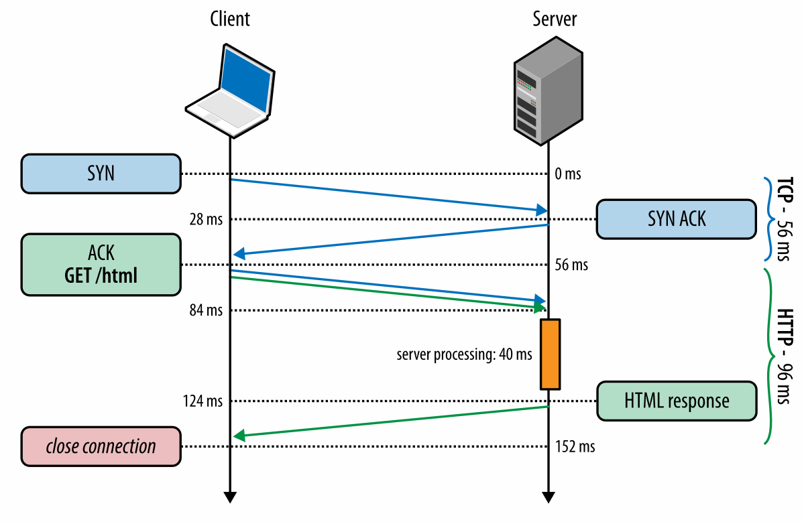 </center> - Reference: [https://hpbn.co/http1x/](https://hpbn.co/http1x/) --- # HTTP - **HTTP** is an application protocol designed on top of the **TCP protocol** - Once the TCP connection is established, the client can send a request to the server ```bash GET / HTTP/1.1 Host: www.cuhk.edu.hk Accept-Language: fr (\r\n) ``` - The first line specifies the method (`GET`), the path (`/`), and the HTTP version - The second line specifies the server name (domain name) - From the second line onwards, these are **headers** of the requests - The last empty line indicates end of the header --- # HTTP - Another example with data sent to the server ```bash POST /contact_form.php HTTP/1.1 Host: developer.mozilla.org Content-Length: 64 Content-Type: application/x-www-form-urlencoded name=Joe%20User&request=Send%20me%20one%20of%20your%20catalogue ``` - Content-Length specifies the lenght of the data sent to the server (64 bytes in this case) - The content (data) follows the empty line - (Ref: https://developer.mozilla.org/en-US/docs/Web/HTTP/Session) --- # HTTP Request ### An HTTP request has the following components - URL - the unique identifier of the online resource - Method/Verb – the action of the request (e.g. GET something?) - HTTP Version – the version of the protocol you are using - Headers – the metadata of the request - Body – Data to be sent to the server --- # HTTP Response ### An HTTP response has the following components - Status Code – indicate whether the request is successful - HTTP Version - the version of the protocol you are using - Headers – metadata of the response - Body – data of the resource requested --- # Uniform Resource Locator (URL) - A specific type of URI (Uniform resource identifier) - It implies the means to access a resource - Syntax of a URL: <center> 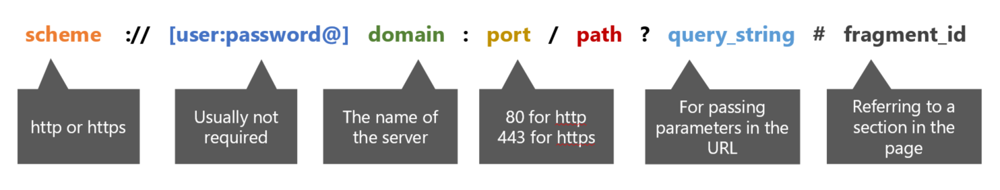 </center> --- # URL Examples - CUHK Homepage<br/>http://www.cuhk.edu.hk/chinese/index.html - YouTube Video<br/>https://www.youtube.com/watch?v=Q93o1yBr-Mc - Apple Daily<br/>http://hkm.appledaily.com/list.php?category_guid=4104&category=daily - Instagram API<br/>https://api.instagram.com/v1/users/self/feed?access_token=ACCESS-TOKEN - Wikipedia<br/>https://en.wikipedia.org/wiki/Python_(programming_language)#Libraries --- # HTTP Methods ### Indicate the **desired action** to be performed on the resource identified by the URL - `GET` – retrieves data from the server - `HEAD` – asks for a response same as GET, but without the body - `POST` – asks the server to accept data enclosed in the request and apply it to the resource - `PUT` – asks the server to store the data under the supplied URL - Other methods: `DELETE`, `TRACE`, `OPTIONS`, `CONNECT`, `PATCH` --- # HTTP GET ### An example of GET: - https://www.youtube.com/watch?v=Q93o1yBr-Mc - Retrieve a YouTube video page providing the value of the parameter v - It has no effect on the resource to be retrieved, it simply retrieves a copy of the resource - `v=Q93olyBr-Mc` is the query string --- # Query String - Each parameter and its value are specified by **name**=**value** - Parameters are separated by ampersand `&` - The maximum amount of information that can be passed to the server using the query string depends on the maximum length allowed for an URL (The limits of different browsers are different, usually at about 64K characters) - NOT for passing sensitive data (e.g. password) (*Why?*) --- class: split # HTTP POST .column-left[ ### An example of POST: - https://www.ft.com/ - After filling in the user name and password and clicking on the **Sign in** button, the data will be sent to the server using the `POST` method - Usually used for submitting a form (e.g. online forms, leaving comments, etc.) - The username and password will be put in the **body** of the request and sent to the server ] .column-right[ <center> <img src="img/ft_login.png" width="90%"> </center> ] --- # Sending Binary Data - Recall that HTTP is a **text protocol** (i.e. everything sent using HTTP are assumed to be characters) - If you want to send files (binary data), you need to **encode** the binary data first before sending - In an HTML form, set `enctype=multipart/form-data` - Setting enctype=“multipart/form-data” tells the server that the data are split into multiple parts, one for each file, plus one for the textual data in the form body. - Ref: https://developer.mozilla.org/en-US/docs/Web/Guide/HTML/Forms/Sending_and_retrieving_form_data ```html <form method=“post” enctype=“multipart/form-data”> <input type=“text” name=“name”> <input type=“file” name=“file”> <input type=“submit” value=“Send!”> </form> ``` --- # HTTP Headers ### Headers contain metadata about the request/response, such as: - Identity of the client - Type of the content (e.g. plain text, HTML, CSS, image) - Encoding of the content (e.g. ASCII, utf-8) - Expiry date/time of the content - Cookies - ... - (For a list of HTTP request and response header fields,<br/>see: https://en.wikipedia.org/wiki/List_of_HTTP_header_fields) --- # Checkng HTTP Headers - Use the developer’s tools in Firefox or Chrome: <center> 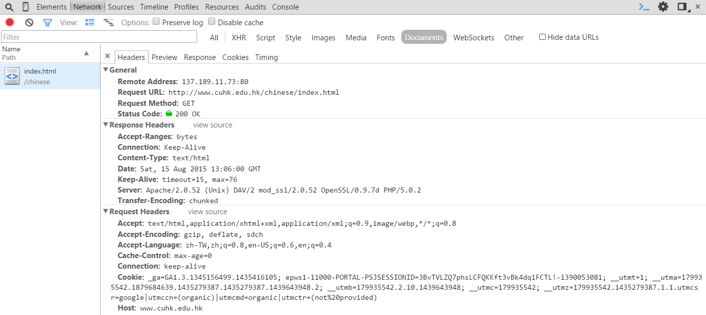 </center> --- # HTTP Headers ### HTTP headers are sets of **key-value pairs** (field names and values) - Some of the **<span style="color: #449922">request header keys</span>**: - **Accept**: the preferred format of the resource (e.g. text/html, application/json, application/xml) - **Accept-Language**: the preferred language of the resource (e.g. zh-TW, zh-CN, en-US) - **User-Agent**: the type of browser or device (e.g. indicate whether the client is on a PC or on a mobile) - Some of the **<span style="color: #226699">response header keys</span>**: - **Content-Length**: length of the content of the resource - **Content-Type**: format of the resource (e.g. text/html) - **Last-Modified**: the time when the resource was last changed - **Server**: The name of the Web server serving the resource For a comprehensive list of header fields: https://en.wikipedia.org/wiki/List_of_HTTP_header_fields --- # HTTP Status Codes ### HTTP Status code is included in a HTTP response to indicate the outcome of an HTTP request - The different categories of HTTP status codes: - **1XX**: Informational - **2XX**: Successful - **3XX**: Redirection - **4XX**: Client-side error - **5XX**: Server-side error --- # Examples of HTTP Status Codes - **200**: OK<br/>Everything is OK, results should be in the response - **301**: Moved Permanently<br/>The client should send request from the URL provided instead - **403**: Forbidden<br/>The client is not authorised to access the resource - **404**: Not Found<br/>The resource cannot be found - **500**: Internal Server Error<br/>Some problem with your server application --- # Stateless Protocol - HTTP is a **stateless protocol** - The server does not retain information about clients between requests - The state of the communication is maintained **on the client side** - Each request is considered independent - No session information stored on the server-side --- # Stateless Protocol <center> <img src="img/stateless.png" width="100%"> </center> --- # Accessing HTTP Resources in Python - As mentioned, HTTP runs on top of TCP, so you can use sockets to request data from an HTTP server ```python import socket # Create a socket and connect to CUHK's web server on port 80 s = socket.socket(socket.AF_INET,socket.SOCK_STREAM) s.connect(("www.cuhk.edu.hk", 80)) # Create an HTTP request and send it to the server req = "GET / HTTP/1.1\nHost: www.cuhk.edu.hk\nAccept-Language: en\n\r\n".encode("ascii") s.sendall(req) # Read the HTTP response from the server resp = s.recv(2048) print(resp) # "HTTP/1.1 200 OK\r\nServer: 02_1517723009\r\n..." ``` --- # Accessing HTTP Resources in Python - In practice, you should use modules such as `http.client`, `urllib.request` or `requests` - The first two can be found in the standard library, while `requests` is a third party package ```python import http.client # Create an HTTP connection to www.cuhk.edu.hk conn = http.client.HTTPConnection("www.cuhk.edu.hk") conn.request("GET", "/") resp = conn.getresponse() print(resp.status, resp.reason) # should print 200 OK page = resp.read() # page now contains the HTML source code of the Web page ``` --- # Accessing HTTP Resources in Python - Using `urllib.request`: ```python from urllib import request with request.urlopen('http://www.cuhk.edu.hk/') as response: page = response.read() ``` - Install `requests` by `pip3 install requests` and then you can import the module ```python import requests response = requests.get("http://www.cuhk.edu.hk") page = response.content() ``` --- class: middle, center # Web/HTTP Servers --- # HTTP - **HTTP** is an application protocol designed for transmitting Web pages and other documents over the Internet - HTTP is also based on the **client-server model** - In this lecture, we will introduce: - How does an HTTP server (Web server) works? - How do we create network applications that use HTTP for communication --- # Web Servers ### What does a basic **Web server** do? - It is responsible for **serving** Web pages and other documents to Web clients (in most cases the Web browsers) - Each incoming **request** asks for a file stored in the machine running the Web server (identified by a **path**) - THe Web server loads the content of the file and sends it to the client - In the most basic form, a Web server serves **static** content --- # Web Servers ### A simple HTTP server’s pseudo-code ```python Open socket, listen at port 80 While true: Accept socket connection from client While read == true: Read request data Process request data Output response Close connection ``` --- # A Simple Web Server in Python - Python comes with a class `HTTPServer`, which is a subclass of `TCPServer` - You can run a simple Web server using the command below, which will start serving content under the folder in which you execute the command ```python $ python3 -m http.server Serving HTTP on 0.0.0.0 port 8000 ... 127.0.0.1 - - [16/Feb/2018 14:54:32] "GET / HTTP/1.1" 200 - ... ``` - By default it listens on all network interface, and on port 8000. Use `--help` to check how you can configure the server --- # Common Web Servers - Many off-the-shelf Web servers can be found. Examples are [Apache](https://httpd.apache.org/download.cgi), [Nginx](https://nginx.org/en/), and [Lighttpd](https://www.lighttpd.net/) <center> 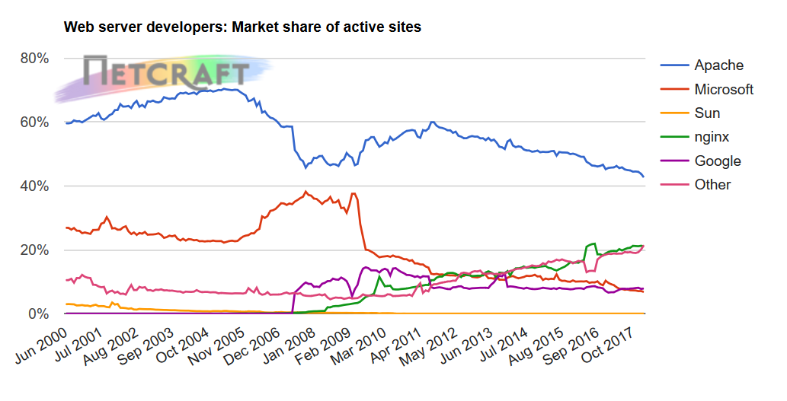 </center> - Ref: https://news.netcraft.com/archives/2018/02/13/february-2018-web-server-survey.html --- # Functions of a Web Server ### Serving Static Content <center> 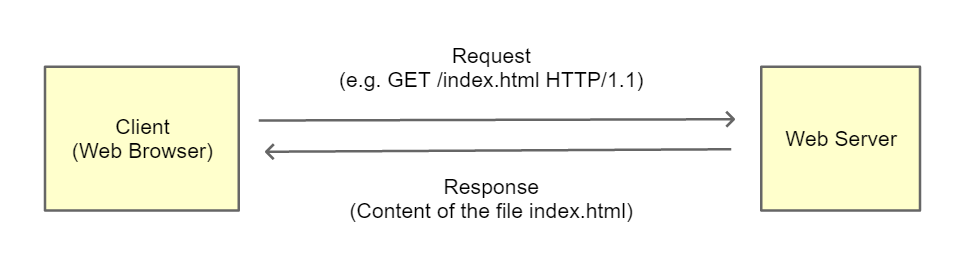 </center> --- # Functions of a Web Server ### Manage Multiple Domains (Virtual Hosting) - Assume that the three domains all map to the same IP address - The Web server needs to determine what to server given the domain in the request <center> 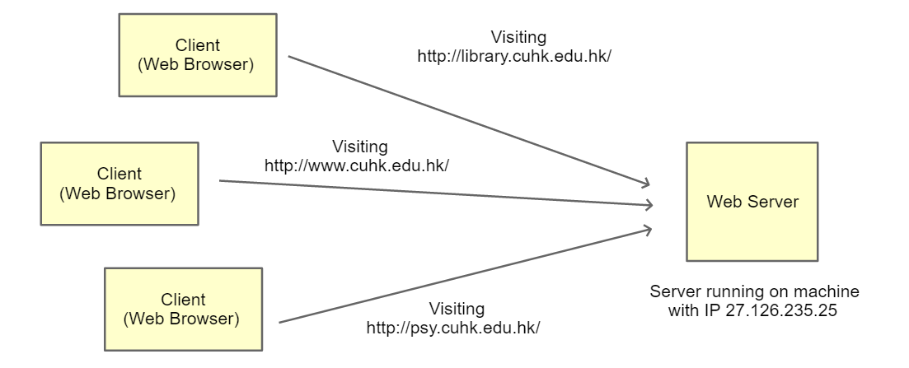 </center> --- # Functions of a Web Server ### Caching - When some files are frequently accessed by the clients, a Web server can keep the contents in the RAM to avoid repeated I/O <center> 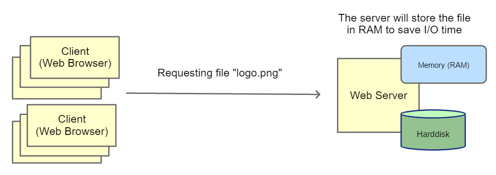 </center> --- # Other Functions - HTTP Authentication (restrict access using username and password) - Executing serer-side scripts - URL redirection / URL Rewriting - Reverse proxying (redirect requests to application servers) - Traffic control - ... --- # Types of HTTP Servers ### In order to **server multiple clients** more efficiently, there are different implementations using different concurrent programming methods - **Multi-threading**: Create a new thread to handle a new request - **Multi-processing**: Create a new process to handle a new request - **Pre-fork Workers**: Create a pool of workers (either processes or threads) in advance to handle new requests - **Event-driven** / **asynchronous** approach --- # Nginx - A [web server](https://nginx.org/en/) "with a strong focus on high concurrency, performance and low memory usage" - A free and open source software developed by [Igor Sysoev](https://en.wikipedia.org/wiki/Igor_Sysoev) (a Russian software engineer) - Use an event-driven (asynchronous) approach to hand HTTP requests Avoid waiting for blocking system calls (e.g. read from socket, read from file in memory or from disk) - Addition functions such as reverse proxy with caching, load balancing, and support other new protocols such as SPDY or WebSocket <center> <img src="img/nginx.png" width="35%"> </center> --- class: middle, center # Serving Dynamic Content --- # HTTP Servers vs. Application Servers - For running a Website with mostly **static content**, a Web server is sufficient - However, building an application or service involves more complex server-side logic, and very often you will need to generate content dynamically. Examples: - Loading the **profile page** of a user in a Web application - Providing **personalized** recommendations - Applications requiring updating data stored in a **database** - A Web application that provides language translation **services** - ... - You need an **application server**! --- class: equal-split # HTTP Servers vs. Application Servers - These two types of servers have different requirements .column-left[ ### <span style="color: #33AA44">HTTP Servers</span> - Has to be stable and secure - Serve static files or content quickly - Be configurable - Be able to handle many requests at a time (concurrency issues) - Be language agnostic ] .column-right[ ### <span style="color: #AA3344">Application Servers</span> - Execute business logic - Development using high-level languages is usually more efficient - Interface with other components to execute the business logic (e.g. database, message queues, other Web services) ] --- # HTTP Servers vs. Application Servers - If your application uses **HTTP**, then a Web server will help you handle most of the common HTTP-related functions - You can focus on the implementation of the **logic** of your application - The Web server will send requests to the application server for carrying out computation or for retrieving dynamic content <center> 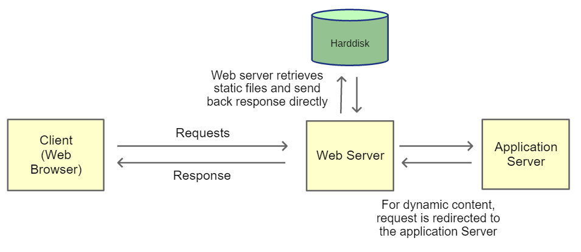 </center> --- # Interface with Application Servers ### How does a Web server communicates with an application? - via executing **console applications** (e.g. CGI) - via plug-in or **modules** (e.g. mod_php in Apache) - via **TCP** connections (e.g. FastCGI) - via other specific **programming interfaces** (e.g. WSGI) --- # Common Gateway Interface (CGI) - A standard protocol for interfacing external application with a Web server - **CGI programs** are executable programs that run on the Web server machine - The Web server creates a new process by executing the CGI programs - CGI programs print response to the **standard output**, which will be collected by the Web server to produce the final response to the client. <center> 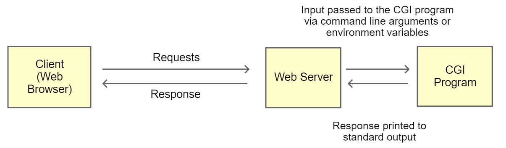 </center> --- # Limitation of CGI - For each request to invoke a CGI program, a new process is created, which will be terminated at the end of the execution - The **overhead** to start and terminate the process can be huge - Consider Assignment 2 in which we use SqueezeNet for object recongition: - In a sample run: - Time to import Tensorflow, Keras and SqueezeNet, and to load the pre-trained model:<br/>**2.03 seconds** - Time to process one image and generate predictions:<br/>**0.14 seconds** --- # Beyond CGI - CGI is suitable only for relatively simple tasks or when the overhead of starting the process is small - To reduce **overhead**, it is necessary to: - Do initialization only once - Pre-load data and logic necessary for the tasks - In other words, it is desirable to have a **persistent** process running to serve incoming requests - Some solutons: FastCGI, SCGI, Python’s WSGI --- # Web Server Gateway Interface (WSGI) - WSGI refers to the [Web Server Gateway Interface](http://wsgi.readthedocs.io/en/latest/what.html) (See also [PEP 3333](https://www.python.org/dev/peps/pep-3333/)) - Specify the interface through which a Web server and an application communicate - If an application is written according to the specification, it will be able to run on any server developed according to the same specification - Applications and servers that use the WSGI interface are said to be **WSGI compliant** --- # Why WSGI? - Web servers are not capable of running Python applications - For Apache, there is a module named **mod_python**, which enables Apache to execute Python codes - However, **mod_python** is - not a standard specifications - no longer under active development - Hence, the Python community came up with **WSGI** as a standard interface for Python Web applications --- # Why WSGI servers and WSGI applications? - It is an example of **de-coupling** - Applications focus on how to get things done (e.g. business logic, updating databases, serving dynamic content, etc.) - Servers focus on how to route requests, handle simultaneous connections, optimise computing resources, etc. - As an application developer, you can focus on developing the functions and features, without worrying about how to interface with the Web server --- class: split # WSGI Flow .column-left[ ### When there is a new request 1. The server invokes the application 2. Parameters are passed to the application using environment variables 3. The server also provides a callback function to the application 4. The application processes the request 5. The application returns the response to the server using the callback function provided by the server Ref: https://ruslanspivak.com/lsbaws-part2/ ] .column-right[ <center> <img src="img/wsgi_summary.png" width="85%"> </center> ] --- # Example - A simple WSGI-compatible application that returns "Hello World" ```python def application(environ, start_response): start_response(‘200 OK’, [(‘Content-Type’, ‘text/plain’)]) yield ‘Hello World\n’ ``` - `environ` contains parameters that the server passes to the application (e.g. parameters in the query string) - `start_response` is a callback function provided by the server, the application uses it to return the HTTP response --- # Web Frameworks - You do not need to directly implementing the WSGI interface in your application, as there are many **Web frameworks** that will help you development an application more easily - In this course, we will talk about [Flask](http://flask.pocoo.org/) - Relatively easy to pick up - Debug mode that assists your development - Many plugins and modules - Other options: - [Django](https://www.djangoproject.com/): A comprehensive Web framework following the model-view-controller (MVC) architectural pattern - [Bottle](http://bottlepy.org/): A micro-framework like Flask, but more lightweight and requires no dependencies on other modules - For more, see https://wiki.python.org/moin/WebFrameworks/ --- class: middle, center # Developing Web Applications using Flask --- # Flask - [Flask](http://flask.pocoo.org/) is a Python framework for developing WSGI compatible Web / HTTP applications - To use Flask, install it using `pip`: ```bash $ pip3 install Flask ``` - A Flask "Hello World" Application ```python from flask import Flask app = Flask(__name__) @app.route('/') def hello_world(): return 'Hello World!' if __name__ == '__main__': app.run() ``` --- class: split # Flask .column-left[ ```python from flask import Flask # Create a Flask application app = Flask(__name__) # Define a new route at "/" @app.route('/') def hello_world(): return 'Hello World!' if __name__ == '__main__': # Run the application at # the default port (5000) app.run() ``` ] .column-right[ <center> </center> ] --- # Routes - Define different routes (paths) for different functions - An HTTP request to a particular path will invoke the corresponding function ```python from flask import Flask app = Flask(__name__) @app.route('/') def index(): return 'Index Page' @app.route('/hello') def hello(): return 'Hello World' ``` Note: If you define the url with a **trailing slash**, like `@app.route('/about/')`, accessing it without a trailing slash will cause Flask to redirect to the canonical URL with the trailing slash. However, if you define the url without a trailing slash, like `@app.route('/about')`, accessing it with a trailing slash will produce a **404 "Not Found"** error. --- # Dynamic Routes - You can change part of the path to be a variable that can be used to change the behaviour of a function - Specifiy `<variable>` in the route, and let the function receive an argument: ```python @app.route('/user/<username>') def show_user_profile(username): message = "Hello {}!".format(username) return message # Use <type:variable> to restrict the data type @app.route('/post/<int:post_id>') def show_post(post_id): message = "This is Post {:d}".format(post_id) return message ``` --- # `GET` and `POST` Requests - By default, a route only answers to HTTP `GET` requests - You can change this by providing the methods explicitly when defining the route ```python from flask import request # Accepts both GET and POST method # Perform different tasks depending on the method @app.route('/login', methods=['GET', 'POST']) def login(): # request is an object containing information # about the request received from the client if request.method == 'POST': # Check user's username and password ... else: # Presents the login form ... ``` --- # Passing Data to the Application - Your app will almost always need to pass some data to the server - In the query string when using GET (e.g. the ID of a news article) - In the HTTP body when using POST (e.g. the username and password for signing in) - You can access the data submitted from the client using the `request` object in Flask ```python @app.route('/get_news', methods=['GET']) def get_news(): news_id = request.args.get("news_id") ... @app.route('/like_news', methods=[POST']) def like_news(): news_id = request.form.get("news_id") ... ``` --- # Generating Response - Response can be classified into two types: - **Human-readable** (e.g. Web page coded in HTML) - **Machine-readable** (e.g. XML, JSON) - Your application may need to return both types of response, depending on which functions get called - Many Websites provide different both types of response (**Web pages** and **APIs**) - For example, consider https://openweathermap.org/: - [Web page](https://openweathermap.org/city/1819729) showing the weather of Hong Kong - [API Response](https://api.openweathermap.org/data/2.5/forecast?id=1819730&appid=b1b1bf856b13c7123253ad168df0d8ae) containing weather information of Hong Kong in JSON format --- class: split # One Page Introduction to HTML .column-left[ - [Hypertext Markup Language (HTML)](https://en.wikipedia.org/wiki/HTML) is used to describe the structure of a Web page, and informs the Web browser how the page content should be **displayed** - It is commonly used with [JavaScript](https://en.wikipedia.org/wiki/JavaScript) and [Cascading Style Sheets](https://en.wikipedia.org/wiki/Cascading_Style_Sheets) to create the user interface of a Web page ```html <html> <head><title>Example Page</title></head> <body> <div> <h1>Hello!</h1> This is an <b>example</b> page </div> </body> </html> ``` ] .column-right[ <center> 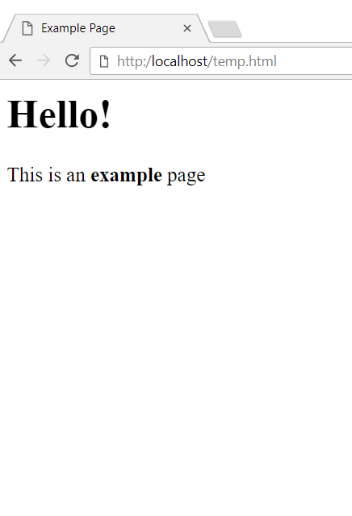 </center> ] --- # JavaScript Object Notation (JSON) - [JSON](https://en.wikipedia.org/wiki/JSON) is a data format commonly used for data exchange - It has the same syntax as the definition of an object in JavaScript - Can be directly converted into Python dictionaries or lists using the `json` module - A JSON file with a list of students taking a course: ```javascript [ { "first_name": "Peter", "last_name": "Chan", "student_id": "12345678" }, { "first_name": "May", "last_name": "Wong", "student_id": "23456789" } ] ``` --- # JSON - JSON is basically made up of **lists** and **dictionaries** - You can convert JSON to and from Python data structures using the [`json`](https://docs.python.org/3/library/json.html) module ```python import json # Converts a string of JSON into Python data structure data_str = '[{"x": 1}, {"x": 3}, {"x": 5}]' data = json.loads(data_str) # Now data[0]["x"] is 1 # Serialize a Python list to a JSON string data_str = json.dumps(data) ``` --- # Generating HTML Response in Flask - In Flask, you can return HTML directly as a string ```python @app.route('/') def index(): return """ <html> <head> <title>My Homepage</title> </head> <body> Welcome! </body> </html> """ ``` --- # Generating HTML Response in Flask - More conveniently, you can use HTML templates that are stored under a `templates` folder ```python from flask import render_template @app.route('/') def index(): # return the content of index.html return render_template('index.html') ``` - Flask uses the `Jinja2` template engine, which is very powerful for generating dynamic HTML pages - See http://flask.pocoo.org/docs/0.12/quickstart/#rendering-templates for some examples --- # Generating JSON Response in Flask - When you are developing an API, you will probably need to return data in JSON format - You should use the `jsonify` function provided by Flask, which will set the `Content-Type` header in the response to `application/json` ```python from flask import jsonify @app.route('/get_news', methods=['GET']) def get_news(): news_id = request.args.get("news_id") articles = get_news_from_db(news_id) return jsonify(status="OK", data=articles) ``` 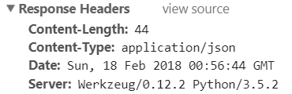 --- class: split # Example .column-left[ - Let’s assume we are developing an API for finding the sum of two numbers: ```python from flask import jsonify @app.route('/add', methods=['GET']) def add(): # Retrieve values of a and b from query string a = request.args.get("a", 0, type=int) b = request.args.get("b", 0, type=int) sum = a + b # Return a JSON response return jsonify(status="OK", sum=sum) ``` ] .column-right[ - Output of sending a HTTP GET request to the path<br/>`/add?a=5&b=6`: ```javascript { "status": "OK", "sum": 11 } ``` ] --- # Testing a Flask Application - You can test your application by simply execute the python script, for example: ```bash $ python app.py * Running on http://127.0.0.1:5000/ (Press CTRL+C to quit) ``` - By default, Flask will execute the app using an **internal Web server** on port 5000, and the APIs can only be accessed from within the same machine (note the **127.0.0.1** address) - You can change the address and port by using the arguments in the `run()` function. For example: ```python app.run(host="0.0.0.0", port=8080) ``` --- # Enabling Debug Mode - For testing and debugging purposes, you can enable the DEBUG mode of Flask by `app.run(debug=True)` - When you execute the script again, you will see ```bash $ python app.py * Running on http://127.0.0.1:5000/ (Press CTRL+C to quit) * Restarting with stat * Debugger is active! * Debugger pin code: 211-226-346 ``` --- # Enabling Debug Mode - If some exceptions occur during the execution of the Flask application, you will see a debug interface. For example: <center> 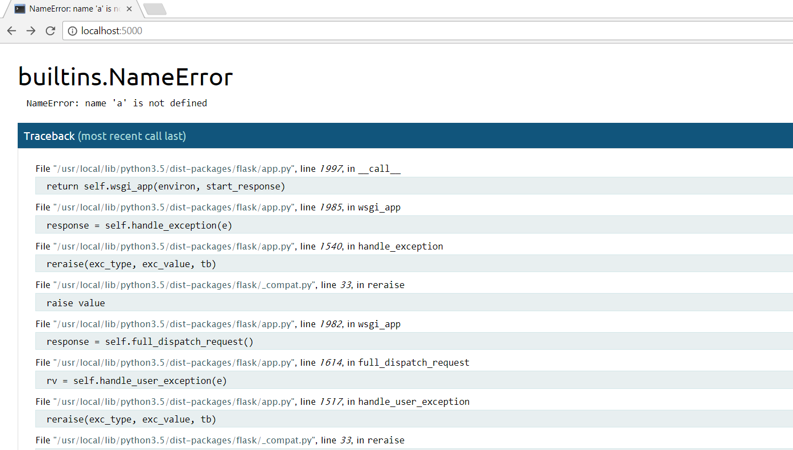 </center> --- # Deploying Flask Applications - The internal Web server of Flask is only for **testing** and **development** purposes - For deploying the application for production use, you need a proper HTTP WSGI server to **host** your application - The HTTP WSGI server will load your application on start up, and route requests to the application <center> 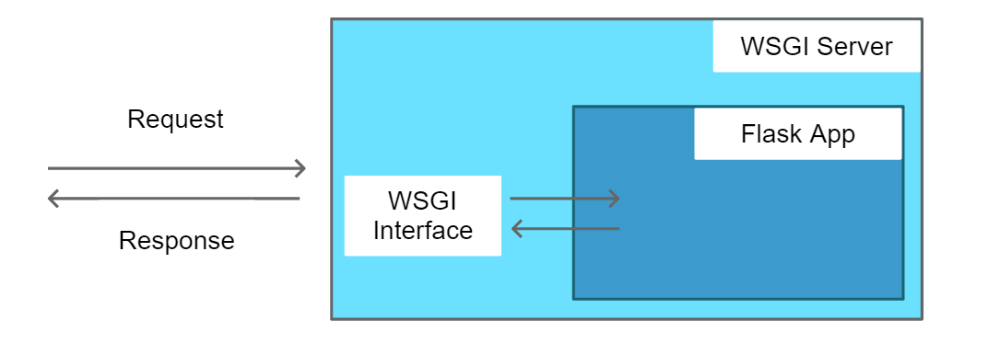 </center> --- class: split # Gunicorn .column-left[ - [Gunicorn](http://gunicorn.org/) is a Python WSGI HTTP Server for Unix / Linux systems. - It acts as a **container** of a WSGI application - It manages one or more instances of the application (multiple workers) - Architecture of Gunicorn - A **pre-fork worker** model - A master process managers the workers - Each worker process runs a **copy** of your application ```bash $ pip3 install gunicorn ``` ] .column-right[ <center> <img src="img/gunicorn_architecture.png" width="110%"> </center> ] --- # Gunicorn - Basic Usage (See [Documentation](http://docs.gunicorn.org/en/stable/index.html)) ```bash $ gunicorn [OPTIONS] $(MODULE_NAME):$(VARIABLE_NAME) ``` - For example: ```bash $ gunicorn app:app -b localhost:8000 –w 4 ``` - A Flask app called `app` defined inside a file called `app.py` - Running on port `8000` on `localhost` - Create **4** worker processes --- # Number of Workers - Depends on your application's design and also the configurations of the server (e.g. number of cores of CPUs) - In general: **2n + 1**, where n = number of cores - Based on the assumption that half of the workers are doing I/O while half of the workers are doing computation - There are **TWO** main types of Gunicorn workers - **Sync Workers**: Default type – handles a single request at a time - Suitable for applications that do not do something that consume an undefined amount of time or resources - **Async Workers**: For non-blocking request processing - Use this if your application has I/O bound operations (i.e. need to wait for I/O events to finish) --- class: split # Example .column-left[ ```python from flask import Flask import time import random app = Flask(__name__) @app.route(“/sleep/”) def go_sleep(): x = random.randint(1,3) time.sleep(x) return str(x) if __name__ == "__main__": app.run() ``` ] .column-right[ - If you use sync workers, a worker can only serve a new request after one request has been finished - Using async workers (e.g. gevent or eventlet), a worker will switch to serve another request while one is waiting for I/O (or any other blocking operation) ] --- # Running Multiple Applications - It is common to have multiple applications running on the same machine - If we allow clients to connect to each applications directly, we need to specify different port numbers <center> 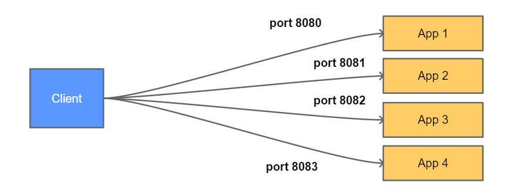 </center> --- # Reverse Proxy - To make it easier for the client to make requests, we usually use a **reverse proxy server** to relay requests to different applications - Clients always send requests to a **Web server on port 80**, which will **redirect** requests to different apps depending on the **URL** <center> 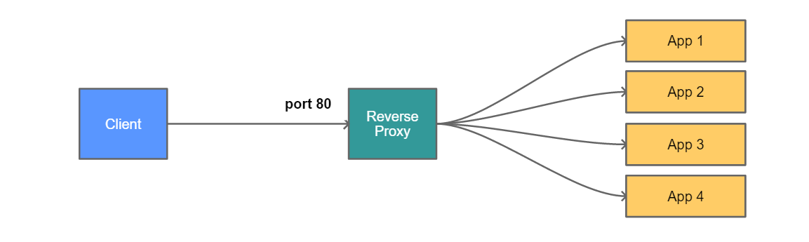 </center> --- # Nginx as a Reverse Proxy - **Nginx** is a Web server but can also be configured as a reverse proxy server - It can proxy requests to another HTTP server or even a non-HTTP server - It supports the following non-HTTP protocol: FastCGI, uwsgi, SCGI, memcached - It can also serve **static pages** more efficiently, and also act a **cache** <center> 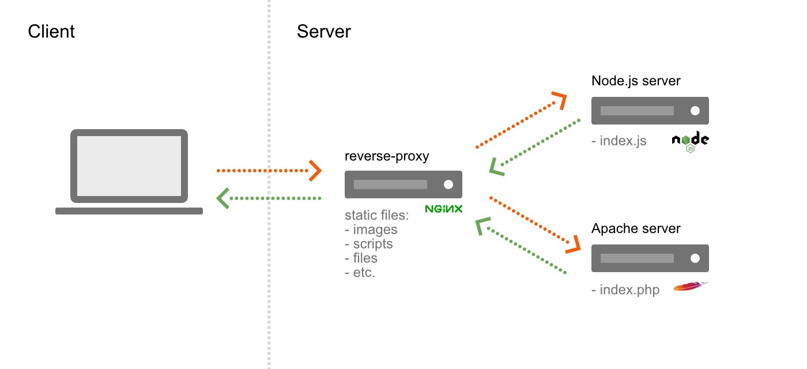 </center> Ref: https://medium.com/@francoisromain/setup-node-js-apache-nginx-reverse-proxy-with-docker-1f5a5cb3e71e --- # Configuring Nginx - Nginx can be configured by editing the configuration files - In Ubuntu, configuration files are usually stored under `/etc/nginx/` - A main configuration file named `nginx.conf` - One or more configuration files for each of the sites hosted by the server<br/>(see `/etc/nginx/site-available` and `/etc/nginx/site-enabled`) - Examples and references: http://nginx.org/en/docs/http/load_balancing.html --- # Supervisor - Usually, we control the gunciorn process using [Supervisor](http://supervisord.org/) - It is a **process control system** can be used to control and monitor other programs - It can be used to **start/stop** a process, or automatically **restart** a process if it terminates - Install via `pip3 install supervisor` - An example config file (put under `/etc/supervisor/conf.d/`): ```bash [program:myapp] command = /home/albert/myapp/env/bin/gunicorn app:app -b localhost:8080 directory = /home/albert/myapp user = albert autostart = true autorestart = true stdout_logfile = /home/albert/myapp/log.txt redirect_stderr = true ``` --- # Summary - Deploying a **Flask** app using **Nginx**, **Gunicorn** and **Supervisor** <center> 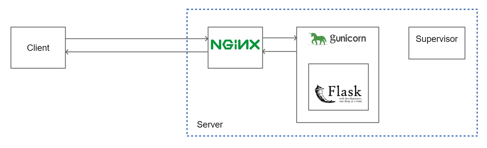 </center> --- class: center, middle # End of Lecture 10